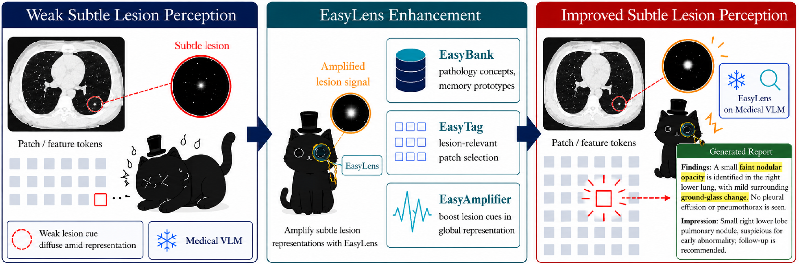
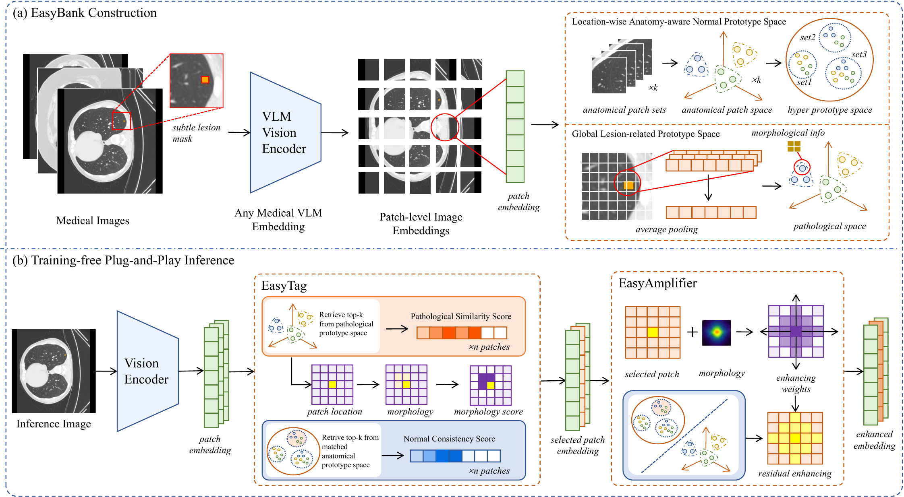
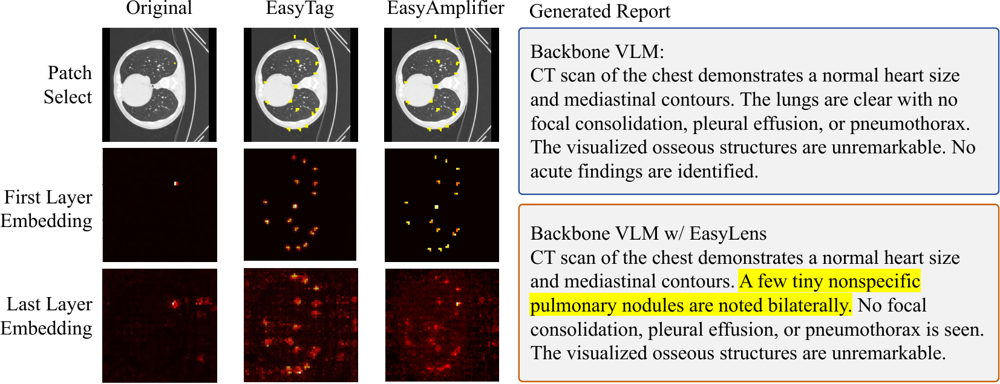

EasyBank
Builds a pathology-anatomy prototype space from CT images and lesion masks, pairing lesion concepts with normal anatomical references.
Research project / Medical vision-language models
NeurIPS 2026
Jilin University · The University of Sydney · Northeastern University · Shanghai Jiao Tong University
*Equal contribution · †Corresponding authors

Subtle lesions are easy to overlook when sparse, low-contrast visual evidence is compressed into a global image representation. EasyLens is a training-free, plug-and-play module for frozen medical vision-language models. It compares suspicious image patches with pathology and anatomy prototypes, selects lesion-relevant patches, and strengthens their morphological signal before the model generates an answer. Across multiple medical image datasets and frozen VLM backbones, it improves subtle-lesion recognition without fine-tuning the model.
Builds a pathology-anatomy prototype space from CT images and lesion masks, pairing lesion concepts with normal anatomical references.
Uses counterfactual prototype reasoning to select patches likely to contain lesion evidence instead of amplifying normal tissue indiscriminately.
Applies morphology-guided residual enhancement to selected patch tokens while keeping the vision-language backbone frozen.

The paper evaluates lesion status recognition, region selection, and lesion-aware report generation on ReX, LIDC, and Abdomen. EasyLens reports the best result across all nine dataset-task combinations in its comparison, and the module transfers across multiple frozen medical VLM backbones.

@article{wang2026easylens,
title={EasyLens: A Training-Free Plug-and-Play Subtle-Lesion Representation Amplifier for Medical Vision-Language Models},
author={Wang, Hao and Zeng, Qiwei and Lin, Jinghao and Ye, Shuchang and Yang, Yuezhe and Peng, Yige and Che, Haoyuan and Kim, Jinman and Bi, Lei},
journal={Advances in Neural Information Processing Systems},
year={2026},
url={https://arxiv.org/abs/2606.06379}
}